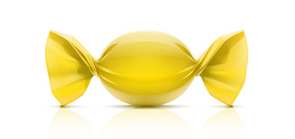

Клубничка |
 Лимончик |
Вишенка |
Карамель со вкусом ванили. Начинка - клубничное пюре. |
Карамель со вкусом ванили. Начинка - лимонное пюре. |
Карамель со вкусом ванили. Начинка - вишневое пюре. |
Ранетка |
Сгущенка |
Сливка |
Карамель со вкусом ванили. Начинка - яблочное пюре. |
Карамель со вкусом ванили. Начинка - сгущенное молоко. |
Карамель со вкусом ванили. Начинка - сливовое пюре. |